| Sum | Equation | Packing |
|---|---|---|
| 4 | 2=1111 | 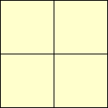 |
| 9 | 3=221 | ? |
| 9 | 3=211111 | 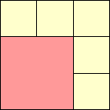 |
| 10 | 31=2211 | 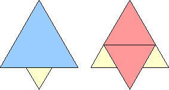 |
| 12 | 3111=222 | 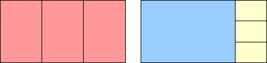 |
| 13 | 32=2221 | 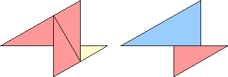 |
| 16 | 4=32111 |  |
| 17 | 41=322 | 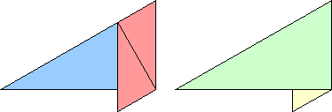 |
| 18 | 411=33 | ? |
| 18 | 33=3221 | ? |
| 18 | 33=222211 | 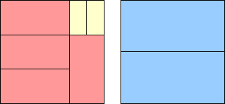 |
| 19 | 4111=331 | 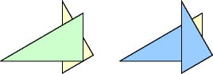 George Sicherman |
| 20 | 42=3311 | 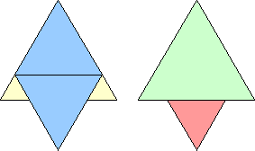 |
| 22 | 4211=332 | 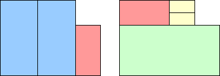 |
| 25 | 5=43 | 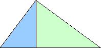 |
| 25 | 5=4221 |  |
| 25 | 43=4221 | 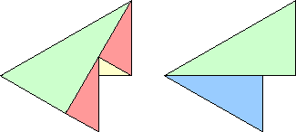 |
| 25 | 5=332111 | ? |
| 26 | 51=3322 | 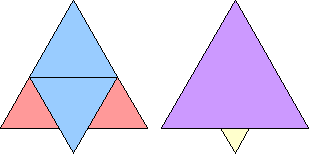 |
| 27 | 511=333 | ? |
| 27 | 422111=333 | 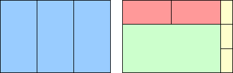 |
| 27 | 4311=333 | ? |
| 28 | 5111=3331 | 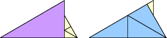 George Sicherman |
| 28 | 5111=4222 | 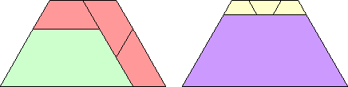 |
| 28 | 4222=3331 | 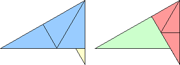 |
| 29 | 52=33311 | 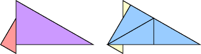 George Sicherman |
| 31 | 5211=3332 | 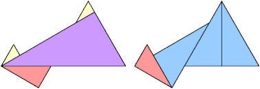 George Sicherman |
| 31 | 5111111=3332 | 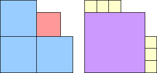 |
| 32 | 52111=44 | ? |
| 32 | 51111111=44 | 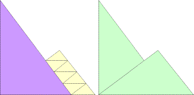 Claudio Baiocchi |
| 32 | 44=33321 |  |
| 33 | 522=333211 | 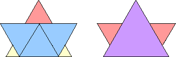 Claudio Baiocchi |
| 33 | 522=441 | 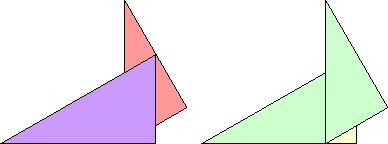 |
| 34 | 53=4411 | 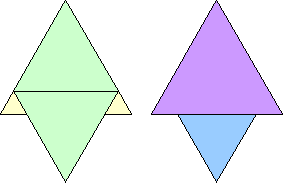 |
| 34 | 53=3332111 | 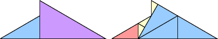 George Sicherman |
| 35 | 44111=33322 | 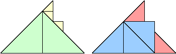 George Sicherman |
| 35 | 52211=4331 |  George Sicherman |
| 36 | 6=5311 | ? |
| 36 | 6=522111 | 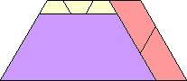 |
| 36 | 6=441111 | 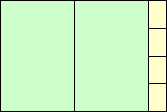 |
| 36 | 6=43311 | ? |
| 36 | 6=4322111 | 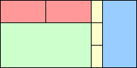 |
| 36 | 6=333221 | ? |
| 36 | 6=33222211 |  |
| 36 | 5311=442 | 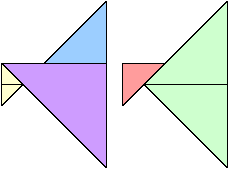 George Sicherman |
| 37 | 61=53111 | ? |
| 37 | 61=5222 | ? |
| 37 | 61=433111 | 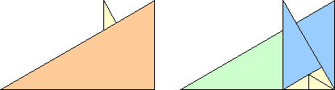 |
| 37 | 61=43222 | 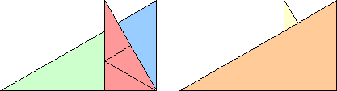 |
| 37 | 61=3332211 | 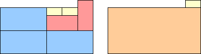 |
| 38 | 611=532 | 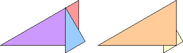 |
| 38 | 611=52221 | 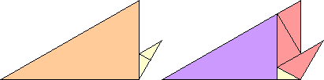 |
| 38 | 611=4332 |  |
| 38 | 52221=4332 | 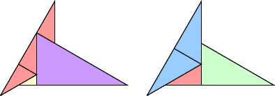 George Sicherman |
| 39 | 6111=333222 | 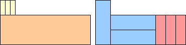 Tino Jonker |
| 40 | 62=53211 | 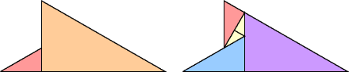 George Sicherman |
| 40 | 62=433211 | 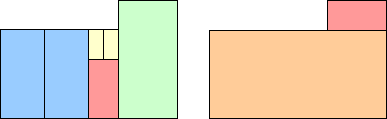 |
| 41 | 621=54 | ? |
| 41 | 621=443 | 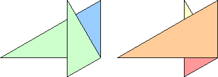 |
| 42 | 6211=541 | 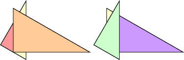 George Sicherman |
| 43 | 62111=4333 | 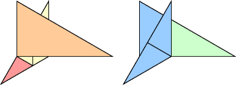 George Sicherman |
| 43 | 62111=533 | ? |
| 44 | 622=5331 | 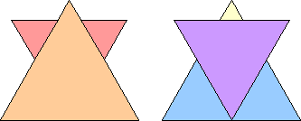 |
| 44 | 622=43331 | 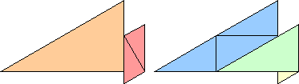 |
| 44 | 622=443111 | 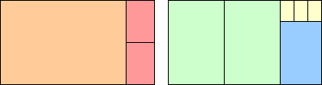 |
| 44 | 5331=44222 | 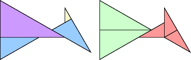 George Sicherman |
| 45 | 63=542 | ? |
| 45 | 63=53311 | ? |
| 45 | 53311=4432 | 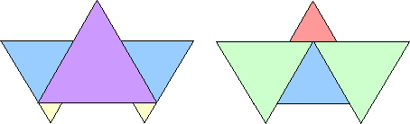 Claudio Baiocchi |
| 46 | 631=5421 |  Claudio Baiocchi |
| 48 | 63111=444 | 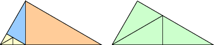 George Sicherman |
| 49 | 7=632 | ? |
| 49 | 7=62221 | ? |
| 49 | 7=62211111 | 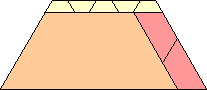 |
| 49 | 7=5422 | ? |
| 49 | 7=5421111 | ? |
| 49 | 7=5411111111 | ? |
| 49 | 7=533211 | ? |
| 49 | 7=53222111 | 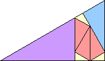 |
| 49 | 7=5222222 | ? |
| 49 | 7=5222221111 | |
| 49 | 7=4441 | ? |
| 49 | 7=4333211 | |
| 49 | 7=43222222 | |
| 49 | 7=4222222221 | ? |
| 49 | 7=4222222211111 |  |
| 49 | 7=333332 | ? |
| 49 | 632=5422 | George Sicherman |
| 49 | 632=4441 | George Sicherman |
| 50 | 71=6321 | George Sicherman |
| 50 | 71=55 | Gavin Theobald |
| 50 | 71=54221 | George Sicherman |
| 50 | 71=4433 | |
| 50 | 6321=55 | George Sicherman |
| 50 | 55=44411 | ? |
| 51 | 711=5431 |  George Sicherman |
| 51 | 551=444111 | ? |
| 52 | 7111=64 | ? |
| 52 | 7111=62222 | |
| 52 | 7111=5333 | Claudio Baiocchi |
| 52 | 7111=4442 | George Sicherman |
| 52 | 7111=43333 | ? |
| 52 | 64=5511 | George Sicherman |
| 52 | 5333=4442 | George Sicherman |
| 53 | 72=54222 | ? |
| 53 | 72=54221111 | |
| 53 | 72=44421 | George Sicherman |
| 53 | 72=433331 | Claudio Baiocchi |
| 54 | 721=6411 | George Sicherman |
| 54 | 721=5432 | Claudio Baiocchi |
| 54 | 552=444211 | George Sicherman |
| 56 | 72111=63311 | George Sicherman |
| 57 | 552111=4443 | George Sicherman |
| 58 | 73=64211 | George Sicherman |
| 58 | 73=5522 | George Sicherman |
| 58 | 73=5441 | George Sicherman |
| 58 | 7221=6332 | George Sicherman |
| 58 | 6332=5441 | George Sicherman |